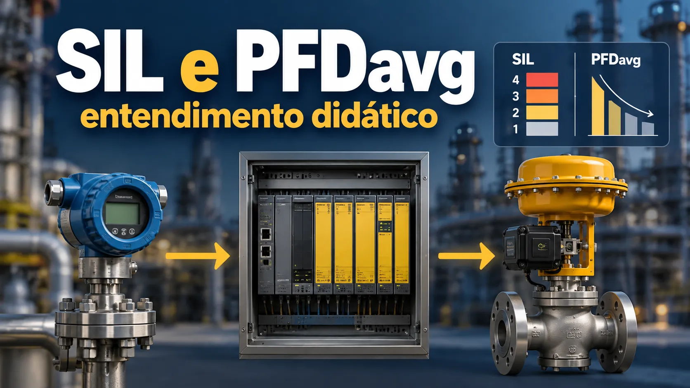

SIL e PFDavg: função, teste e ciclo de vida
Conteúdo técnico: ALOGY Engenharia · Revisado em: 16/09/2026

Em segurança funcional, SIL (Safety Integrity Level) não deve ser tratado como um adjetivo solto aplicado a qualquer equipamento. A pergunta correta é: qual função instrumentada de segurança precisa atuar, em qual cenário, para levar ou manter o processo em estado seguro, e com que integridade essa função precisa ser executada?
A IEC 61511 trata de sistemas instrumentados de segurança no setor de processo e estabelece requisitos ao longo da especificação, projeto, instalação, operação e manutenção. Ela é uma implementação setorial da estrutura mais geral da IEC 61508 para sistemas elétricos, eletrônicos e eletrônicos programáveis relacionados à segurança.
1. SIF, SIS e SIL: três conceitos diferentes
| Termo | Leitura prática | Erro comum |
|---|---|---|
| SIF | Função instrumentada de segurança definida para responder a um cenário e atingir/manter estado seguro. | Confundir a função com um único transmissor, CLP de segurança ou válvula. |
| SIS | Sistema instrumentado de segurança que pode executar uma ou mais SIFs. | Assumir que todo controle automático da planta pertence ao SIS. |
| SIL | Nível discreto de integridade associado ao requisito/desempenho de uma função de segurança dentro do contexto normativo aplicável. | Dizer que um componente “é SIL X” e usar isso como prova do desempenho da SIF completa. |
2. A função precisa ser definida antes da verificação
Antes de discutir PFDavg, arquitetura ou intervalo de teste, a especificação precisa dizer o que a função deve fazer. Uma SIF bem definida normalmente deixa claro:
- qual perigo ou cenário está sendo tratado;
- qual variável ou condição dispara a função;
- qual é o estado seguro esperado;
- qual tempo de resposta é necessário;
- quais sensores, lógica, elementos finais e utilidades fazem parte da função;
- quais modos de operação, bypasses e condições de manutenção precisam ser considerados.
Sem essa fronteira, um cálculo probabilístico pode usar dados corretos de componentes e ainda assim verificar a função errada.
3. Onde o PFDavg entra
Para funções em modo de baixa demanda, o PFDavg expressa a probabilidade média de a função falhar perigosamente quando for demandada, dentro das premissas do modelo adotado. Ele não é uma propriedade fixa e imutável do equipamento; depende do conjunto e da estratégia de operação e manutenção.
Entre os fatores que podem influenciar o resultado estão:
- taxas de falha perigosas e sua classificação;
- cobertura de diagnóstico;
- arquitetura e redundância;
- falhas de causa comum e dependências;
- intervalo e cobertura do teste de prova;
- tempo de reparo e disponibilidade de manutenção;
- estado de bypass ou inibição;
- capacidade do elemento final de executar a ação requerida.
4. Sensor, lógica e elemento final precisam ser avaliados como uma função
Em muitas aplicações, a maior parte da indisponibilidade não está necessariamente no mesmo subsistema. A análise precisa considerar todos os blocos relevantes da SIF e suas interações. Um transmissor com documentação de segurança funcional não compensa, por exemplo, um elemento final incapaz de atingir o estado seguro dentro do tempo requerido.
| Bloco | Perguntas úteis |
|---|---|
| Sensor(es) | Faixa e princípio são adequados? Diagnósticos e falhas perigosas estão tratados? Há independência suficiente em relação ao BPCS quando exigida? |
| Lógica | Arquitetura, aplicação, entradas/saídas e diagnóstico correspondem à SRS? Alterações são controladas? |
| Elemento final | Válvula, solenóide, atuador, energia e acessórios conseguem executar a ação segura? O teste cobre as falhas relevantes? |
| Suporte | Fontes, ar de instrumento, cabeamento, comunicação, bypasses e interfaces introduzem dependências ou modos de falha não considerados? |
5. Teste de prova não é apenas uma periodicidade
O teste de prova existe para revelar falhas perigosas que não foram detectadas pelos diagnósticos automáticos. Por isso, “testar a cada 12 meses” é uma informação incompleta. Também é preciso saber o que o procedimento realmente testa, quais falhas permanecem ocultas, como o bypass é controlado e como o retorno ao serviço é verificado.
Um teste parcial pode ser útil, mas a parcela de falhas coberta pelo teste parcial e a parcela que só aparece no teste completo precisam ser tratadas coerentemente no modelo. Da mesma forma, falhas encontradas em campo devem alimentar revisão das premissas, intervalos e estratégia de manutenção.
6. O ciclo de vida evita tratar SIL como uma conta isolada
- Definir perigo e redução de risco necessária. O requisito nasce da análise de risco, não do catálogo de um equipamento.
- Especificar a SIF. Estado seguro, setpoint, tempo de resposta, interfaces, modos e requisitos precisam ser documentados.
- Projetar e verificar. Arquitetura, dados de falha e premissas devem sustentar o requisito definido.
- Instalar e validar. A função instalada deve ser testada contra os requisitos, não apenas energizada.
- Operar, testar e manter. Proof test, falhas, bypasses e intervenções precisam preservar as premissas usadas na verificação.
- Gerenciar mudanças. Mudanças de processo, lógica, instrumento, válvula, intervalo de teste ou procedimento podem exigir nova avaliação.
7. O que não prova que uma SIF atende ao SIL requerido
- um único certificado ou “SIL capable” de componente;
- um loop check bem-sucedido;
- um teste de curso da válvula sem analisar cobertura;
- um valor de PFD copiado de exemplo genérico;
- o fato de a função nunca ter sido demandada;
- um cálculo sem SRS e sem fronteira clara da função;
- uma arquitetura probabilisticamente adequada sem tratar requisitos sistemáticos e de ciclo de vida.
8. Relação com LOPA
Uma LOPA pode ajudar a determinar quanta redução de risco adicional é necessária para um cenário. Se essa redução for atribuída a uma SIF, o requisito passa a ser tratado dentro da segurança funcional. O passo seguinte não é “escolher um transmissor SIL”, e sim especificar e verificar a função completa.
Essa separação evita duas confusões frequentes: usar o cálculo de uma SIF para justificar um cenário de risco mal definido, ou usar o resultado da LOPA como se ele já comprovasse o desempenho da função projetada.
Referências técnicas
- IEC 61511-1:2016+A1:2017 — Functional safety, safety instrumented systems for the process industry sector.
- IEC 61508-1:2010 — Functional safety of E/E/PE safety-related systems, general requirements.
- CCPS/AIChE — Initiating Events and Independent Protection Layers in LOPA.